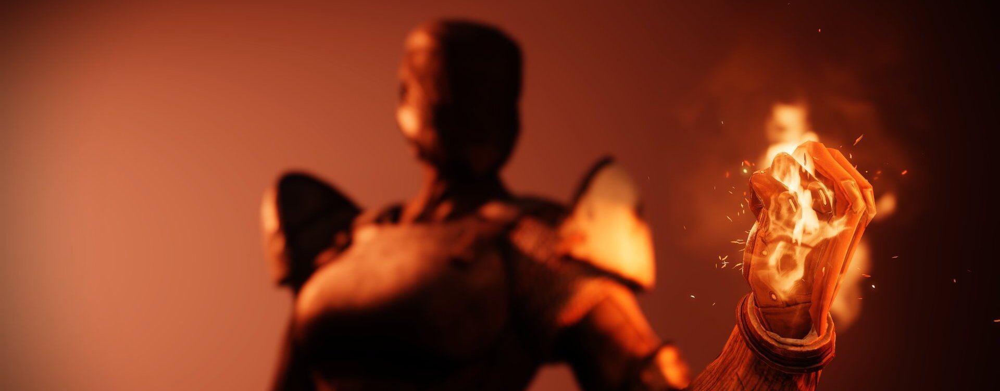
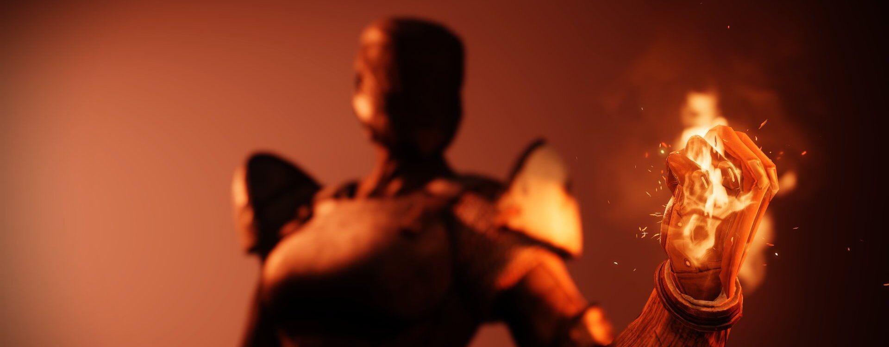

Le Titan
Les Titans sont des guerriers, héros et champions de la Lumière, qui se servent des dons du Voyageur pour faire la guerre aux Ténèbres. Confiants et résolus, les Titans ne reculent jamais devant l'adversité. Leur force brute est au service de la volonté du Voyageur
Quand le désir de tremper dans cette chaleur bénite fut le plus enivrant, les rênes furent tirées et le marteau s'abattit. Il s'abattit sur les misérables, sur ceux qui étaient capables du pire pour le soleil, en un baptême par le feu sur la terre.
Quand la fumée si dissipa, les reines avaient disparu. Le feu commença à mourir jusqu'à ce qu'il ne reste presque plus de marteau. L'ordre légitime, les briseurs d'étoiles, furent dissous dans le crépitement des braises.
AQuand les vents changèrent, les braises reprirent et allumèrent une nouvelle flamme. Cette flamme gonfle pour ceux qui cherchent la destruction dans les ombres afin de la purifier au soleil.
Quand cette flamme atteint son zénith, nul n'échappe à sa chaleur. Levez-vous, vous qui portez le marteau ! Il nous reste des soleils à briser.
Brise soleil
Marteau de soleil
Invoquez un marteau enflammé et semez la destruction sur vos ennemis. À l'impact, il se brise en multiples éclats explosifs en fusion.
Masse enflammée
Invoquez une masse enflammée et écrasez vos ennemis avec la force d'un tremblement de terre. Frappez le sol avec la masse pour créer un cyclone de flammes qui cherche les cibles.
- Grenades